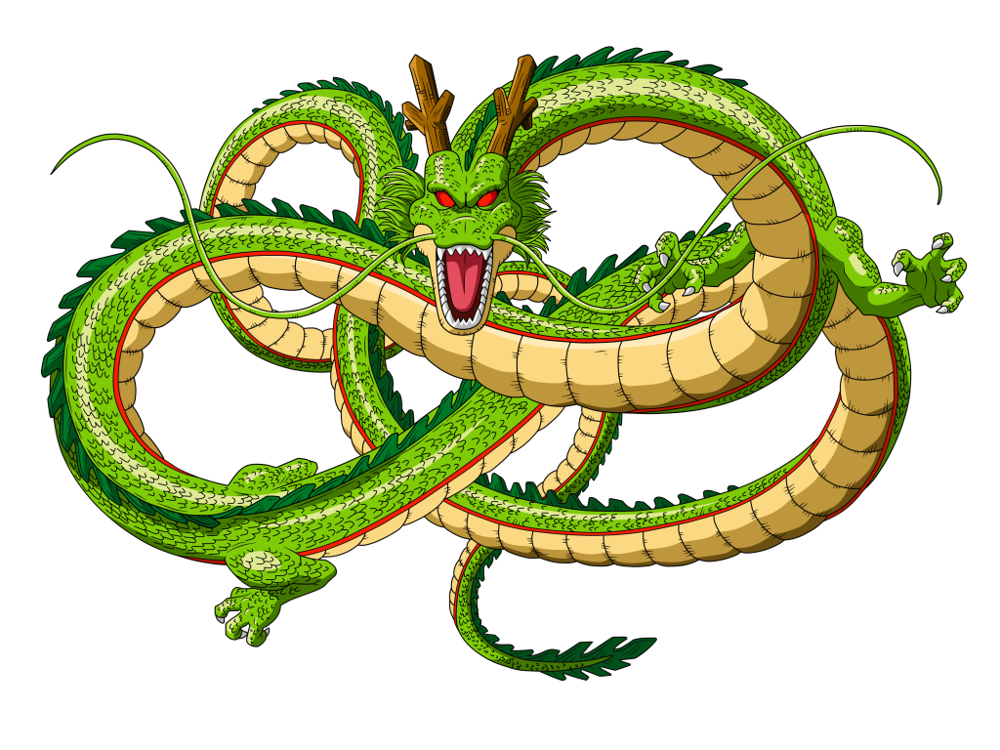

História Dragon Ball Z
Após cinco anos de paz, a vida de Goku foi abalada mais uma vez com a chegada de Raditz, declarando-se o irmão mais velho de Goku e membro da quase extinta raça Saiyan e que foi enviado ao Planeta Terra por seu Pai, quando o Planeta deles estava preste a ser destruido e que esse foi o meio que seu Pai conseguiu para se manter vivo, e diz que após seu Pai envia-lo para a Terra o Poderoso Freeza destruiu o Planeta com todos os Sayans. Raditz sequestra Gohan, o filho de quatro anos de Goku e Chi-Chi, Goku deve se unir a seu antigo arqui-inimigo Piccolo para recuperá-lo. Após a morte de Raditz, dois Saiyans mais poderosos, Vegeta e Nappa, decidiram usar as esferas do dragão da terra para ganhar a vida eterna. Com Goku morto, os guerreiros da Terra devem treinar mais do que nunca para se preparar para a chegada dos Saiyans.

Inimigo do meu inimigo..
Goku, usando suas últimas forças, pula e segura Raditz. Raditz não consegue se soltar, e Goku diz a Piccolo para tentar seu ataque novamente. Piccolo não hesita, sabendo que o ataque também matará Goku, mas ele sabe que os amigos de Goku podem revivê-lo com as Esferas do Dragão, mesmo assim ele fica satisfeito de matar seu arqui-inimigo. Ele lança outro Makankosappo, e Raditz, segurado por Goku, não pode desviar, e o ataque penetra ambos os peitos de Goku e Raditz, ferindo mortalmente ambos. Raditz, mas Piccolo informa a Raditz que Goku será revivido com as Esferas do Dragão.
Após a batalha com os Saiyajins na Terra, Gohan, Kuririn e Bulma dirigem-se ao planeta natal de Piccolo, Namek, em busca de novas esferas do dragão para reviver seus camaradas mortos. Infelizmente, o vilão mais temido do universo, Freeza, também está procurando pelas esferas do dragão. Na convocação de Freeza, a colorida e enérgica Força Ginyu chega ao planeta Namekusei liderada pelo Capitão Ginyu. Gohan e Kuririn devem unir forças com Vegeta se desejam enfrentar os soldados de Freeza.
Tendo derrotado a Força Ginyu, nossos heróis devem se recompor, mas é tarde demais, pois Freeza chegou com força total. A verdadeira batalha em Namekusei acontece e Goku atinge o Super Sayajin pela primeira vez.
Personagens
 Goku
Goku É um saiyajin que foi enviado à Terra para erradicar todos os humanos, mas acabou perdendo a memória. Foi adotado pelo Vovô Gohan e quando criança e aprendeu todos os costumes dos humanos, apesar do jeito brincalhão, gentil e inocente ele é o guerreiro mais poderoso da Terra e um dos maiores do universo.

Chichi
É filha do Rei Cutelo, que sempre sonhou em ter uma filha guerreira e por isso a treinou desde pequena. Quando cresceu ela ficou bem mais responsável e passou a odiar lutas. Casou-se com Goku e com ele teve dois filhos, Gohan e Goten. Mostrou-se superprotetora e amorosa com os filhos, sempre os obrigando-os a estudar e deixar as artes marciais de lado. É também a única pessoa consegue deixar Goku com medo, quando vê ela furiosa.
 Gohan
Gohan O pimeiro filho de Goku e Chichi. A mistura de espécies fez com que Gohan fosse muito mais poderoso que qualquer outro guerreiro que á existiu, mesmo que ainda fosse muito jovem. Ele até foi treinado por Piccolo para ser um grande guerreiro. Porém por insistência de sua mâe Chichi, ele se dedicou bem mais aos estudos e se tornou um cientista, deixando as lutas de lado, e se casou com Videl, seu amor de adolescência.
 Vovô Gohan
Vovô Gohan Morava no Monte Paozu, onde encontrou o pequeno Goku, e o adotou o garoto e passou a treiná-lo e educá-lo, mas só quando Goku cai de um penhasco e bate a cabeça é que ele se torna inocente e pacífico. Certa noite, Goku vê a lua cheia e se transforma em Oozaru, sem intenção ele mata o Vovô Gohan e não se lembra de nada depois, mas com os poderes da Vovó Uranai, ela trás de volta o Vovô por um dia para se despedir de Goku.
É um namekuseijin é um dos filhos de Piccolo Daimaoh , no início ele só queria se vingar de Goku por ter matado seu pai, porém após ser derrotado e ter sua vida poupada por Goku, ele resolve ajudar os guerreiros do bem, ele ainda treinou o pequeno Gohan.
Irmão de Goku, é um dos poucos saiyajins que sobraram após a extinção da raça, pois ficou do lado de Freeza. Ele veio à Terra avaliar a missão que seu irmão havia sido designado, mas ficou furioso ao descobrir que Goku havia se tornado bondoso e não lembrava que deveria destruir os humanos. Raditz luta de forma suja, manipula os sentimentos dos adversários e mente o tempo todo para afetá-los. Adora "brincar" com seus oponentes, fazendo-os sofrer o máximo possível antes de terem seu fim.
Vegeta
Príncipe dos saiyajins, filho do Rei Vegeta, chegou a Terra como um vilão, uma ameaça, mas foi mudando com o tempo até integrar o time de heróis, porém continuou arrogante, sério e inescrupuloso como sempre foi. Um dos guerreiros mais poderoso do universo, conseguindo atingir altos níveis entre os saiyajins. Possui uma grande rivalidade, que ao mesmo tempo é uma grande amizade, com Goku.
 Kuririn
Kuririn Ainda criança torne-se discípulo do Mestre Kame e treinou junto com Goku, que veio a se tornar seu melhor amigo. Inicialmente Kuririn e Goku participavam de muitos torneios de artes marciais e enfrentavam vários inimigos juntos, porém com o aumento do nível dos inimigos Kuririn um humano comum, não suportava alguns duelos, por isso resolveu "sossegar" e constituir uma família com a Androide 18.
 Bulma
Bulma Inicialmente era uma garota aventureira que viajava em uma jornada atrás das Esferas do Dragão usando dispositivos obtidos na empresa de seus pais, a Capsule Corp. Foi assim que conheceu Goku, com quem entrou em muitas aventuras, anos depos ela se casa com Vegeta e com ele tem dois filhos, Trunks e Bra.
Capitão de um grupo de elite de Freeza, as Forças Especiais Ginyu, é muito leal ao seu chefe e obedece sem questionar, mesmo que isso vá contra sua honra. Possui poder de trocar de corpos com outras pessoas e assim adquirir sua aparência e seus poderes, em meios as lutas ele costuma fazer poses estranhas.
 Freeza
Freeza É um conquistador e imperador de vários planetas por toda a vastidão do universo. Por muito tempo usou mercenários saiyajing para conquistar novos mundo, mas com o tempo passou a temer seus poderes e por isso destruiu o planeta Vegeta e eleminou todos da raça que podia. É um dos seres mais poderosos de todo o universo em todos os tempos, capaz de assumir formas diferentes que suprimem e elevam seu poder a grandes escalas
A origem do meme
O personagem Kuririn, um dos amigos mais próximos do protagonista Goku, é morto pelo vilão Freeza. Esse evento causou grande comoção entre os fãs da série, uma vez que Kuririn era um personagem muito querido e popular. A cena se tornou um meme popular entre os fãs da série, que começaram a modificar a frase de Kuririn de diversas formas, como “Freeza! Por que você matou o Kuririn?” ou simplesmente “Freeza! Você matou o Kuririn!”. Desde então, o meme “Freeza porque você matou o Kuririn” se tornou uma referência popular entre os fãs de anime e de Dragon Ball Z em particular, sendo frequentemente utilizado em paródias, memes e piadas relacionadas à série.
Por hoje é só
Me acompanhe com meus estudos, segue minhas redes sociais :